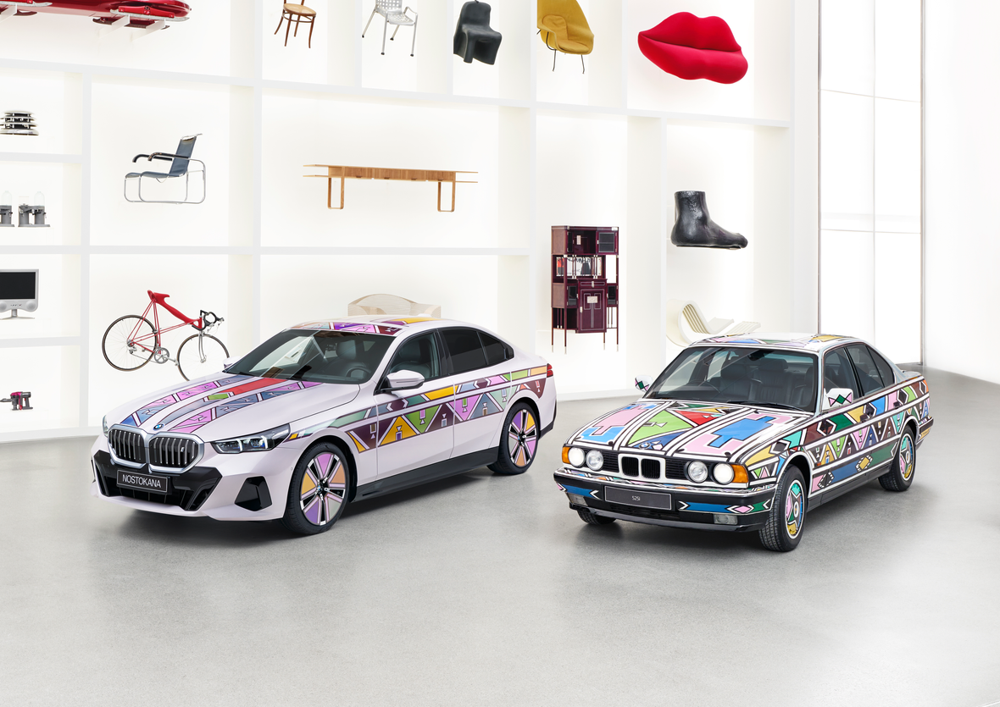
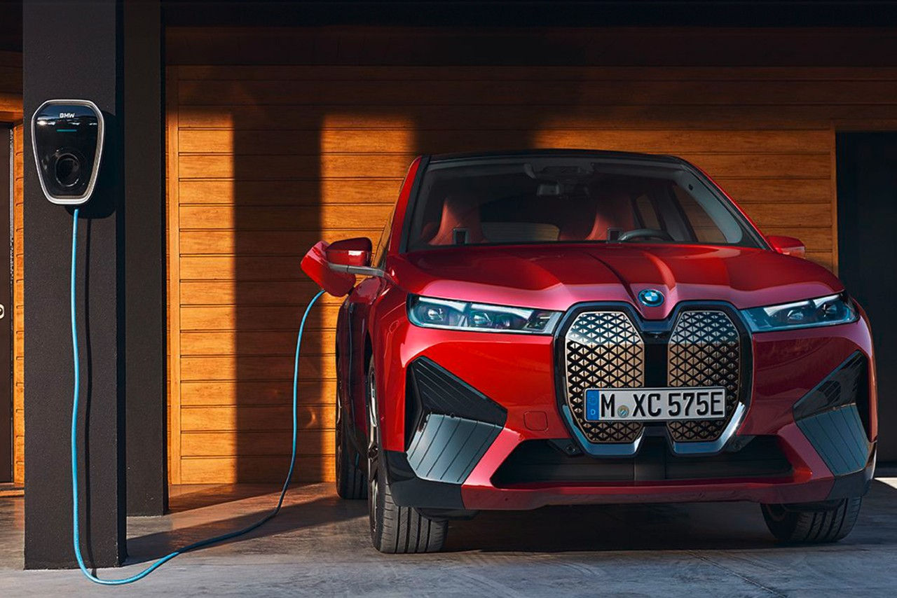

BMW i5 Flow NOSTOKANAThe BMW Group presents a fusion of art and innovation at the Frieze Los Angeles art fair in the form of the BMW i5 Flow NOSTOKANA. The one-of-a-kind vehicle combines colour-change technology developed by BMW with the artistic language of South African artist Esther Mahlangu. |

DRIVE TECHNOLOGIESResearch into new drive technologies is one of our top priorities. Future mobility lies in the optimisation and development of drive technologies. And that’s why hydrogen is so important. Over the coming years, our strategic focus will be mainly on electric mobility specifically on the Neue Klasse, due for launch in 2025. |